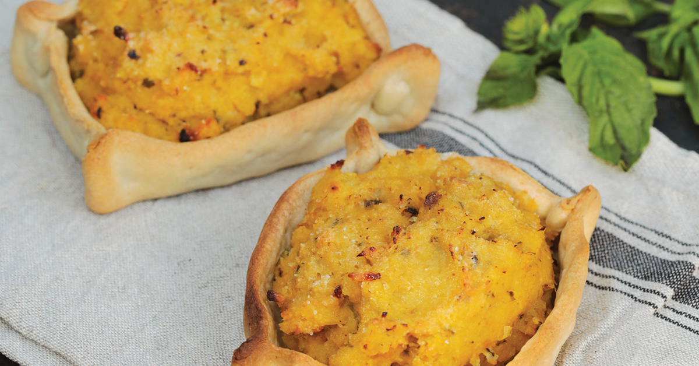

Pastel de choclo

Su wen pastel de choclo pa' pasar el hambre
Exquisita masa rellena de choclo, cebolla, carne y un montón de weás más que le dan un sabor bueno, siempre y cuando, esté hecho por alguien que sepa cocinar.
Si es que hay un plato típico chileno que se consuma el 18 de septiembre (para celebrar las fiestas patrias), luego de la empanada de pino y de los choripanes...
ese sería el pastel de choclo.
Ingredientes
- Relleno: 10 choclos grandes
- 10 hojas de albahaca
- 1/2 kilo de carne molida
- 2 cebollas
- 2 dientes de ajo
- 2 cucharadas de azúcar
- 4 huevos
- 50 gramos de mantequilla o manteca
- 4 presas de pollo (trutro o pechuga)
- 50 gramos de pasas
- 60 gramos de aceitunas negras
- Sal
- Pimienta negra molida
- Ají de color
- Masa: 1/2 kilo de harina sin polvos
- 60 gramos de manteca o mantequilla
Preparación
- Limpie y desgrane los choclos, luego muélalos junto con la albahaca.
- Para preparar el relleno cueza las presas de pollo en agua con sal.
- Por otro lado, haga un sofrito con cebolla y ajo picado en cuadritos (brunoise) y condimente con sal, pimienta y ají de color.
- Luego agregue la carne molida y siga friendo, rectifique condimentos y reserve.
- Cueza los huevos por 11 minutos a partir de agua fría.
- En una olla coloque el choclo molido, junto con la albahaca y cueza 30 minutos aproximadamente a fuego medio, revolviendo en forma constante con la ayuda de una paleta de madera.
- Condimente con sal, mantequilla y un poco de azúcar si lo desea.
- Para la masa ponga la harina en un bol formando un volcán al centro, agregue la manteca derretida, media cucharadita de sal y un poco de agua tibia hasta que quede una masa homogénea y suave.
- Tape la masa con un paño o alusa plast y dejar reposar por 10 minutos.
- Montaje: Una vez lista la masa, usleree dejándola de un espesor de 3 milímetros aproximadamente.
- Corte, con la ayuda de un plato, discos de 22 centímetros de diámetro aproximadamente, coloque los discos sobre pocillos redondos para horno o timbales enmantequillados y pinte con yema de huevo diluido con gotas de agua fría o leche (dorar).
- Doble formando 4 esquinas y así nos van quedando nuestros pocillos de masa.
- Hornee por 5 minutos a 180°C, luego retire del horno y desmolde de los pocillos.
- Comience el llenado de éstos colocando el pino de carne molida, los trozos de pollo, huevos duros cortados, aceitunas, pasas y finalmente la pasta de choclo cocido y espolvoree azúcar encima.
- Lleve a horno a180°C por 15 minutos, para gratinar, retire del horno y sirva caliente.
- Listo!
~Volver a la página principal~